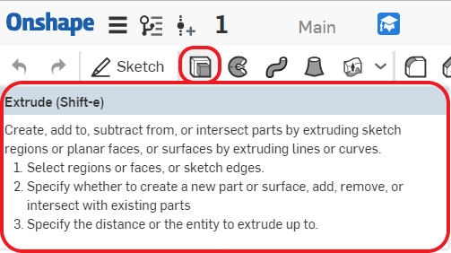
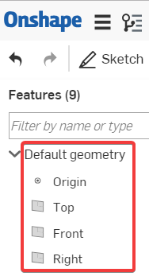
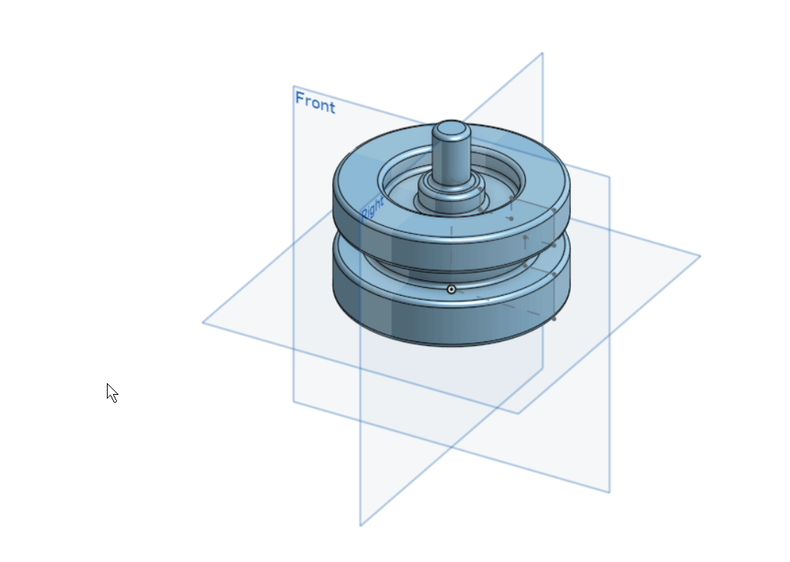
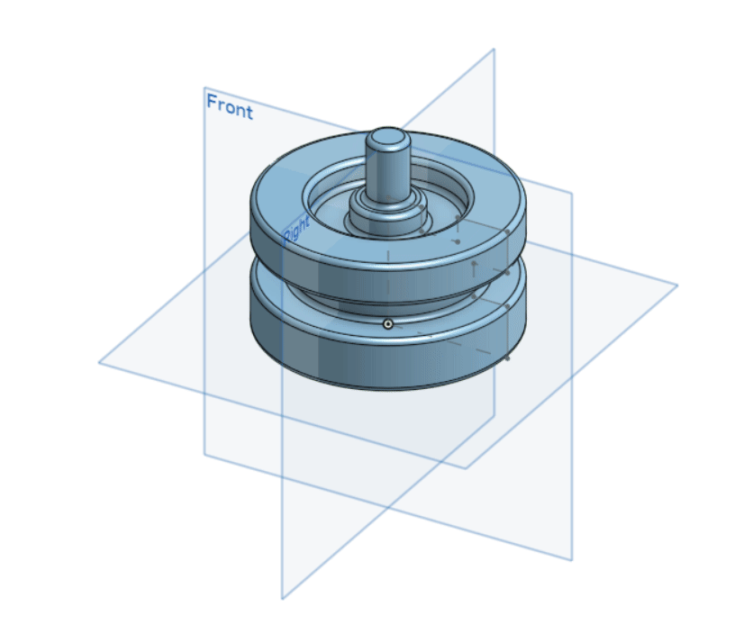

1. What’s the quickest way to learn more about each feature in the toolbar ( 如何用最快的方法了解工具欄中每個功能是什麼 ) ?
Hover the mouse over it for a second, and a description of the feature will pop up ( 將鼠標標停在上頭一秒鐘，就會彈出該功能的說明 ) .

2. Briefly describe the four foundational features ( 簡要描述四個基本特徵 ). Feel free to draw pictures if it helps ( 請隨意繪製圖片加以幫助說明 ) :
3. What is the default geometry in a Part Studio ( Part Studio中的默認幾何體是什麼 ) ?
The origin and three orthogonal planes ( 原點和三個正交平面 ) : Top ( 上視圖 ) , Front ( 前視圖 ), Right ( 右側視圖 ) .

4. What’s the difference between a box select from Left-to-Right and a box select from
Right-to-Left ( 從左到右框選和從右到左框選有什麼區別 ) ?
L-R = selects everything within the box ( 框選框框內的所有內容 ) .

R-L = selects everything the box touches ( 框選接觸的所有內容 ) .

5. Can a document in Onshape have multiple Part Studios ( Onshape的文件可以有多個Part Studios嗎 ) ?
Yes.